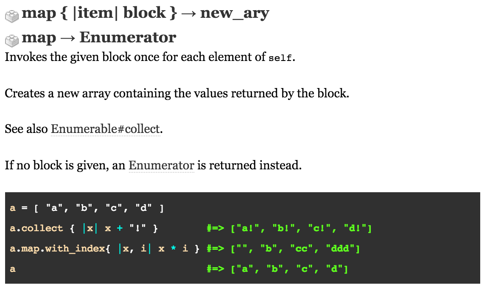

Enumerable Methods
11 October 2015
This week I did a lot of work with Enumerable#map. Here is what the ruby docs say about it:
An enumerable is how Ruby is able to get elements out of a collection, one at a time. Before we go into explaining .map lets go over some other enumerators that are common in Ruby. The most common in Ruby would be each. Take a look at the example below:
enumerator = [2, 4, 12]
enumerator.each { |i| puts i + 1 }
This creates an array with the values 2, 4, and 12. The Enumerator#each runs through each individual element in the array one at a time and evaluates the code block. i in this case is just a placeholder for each element individually and the block of code is whats to be executed on the element, in this case puts i + 1.
The map method takes an enumberable ojbect and a block and runs the block for each element, outputting each returned value from the block. This is a non-destructive method unless the map! is used.
[1, 2, 3, 4].map { |i| i * i } #=> [1, 4, 9, 16]
map with a block returns an Array. Why would we use map over each? One example would be:
schools = [harvard, princeton, yale]
names.map! { |i| i.capitalize }
names.each { |i| puts i + ' is an okay school to go to.' }
The output from the following would be:
Harvard is an okay school to go to.
Princeton is an okay school to go to.
Yale is an okay school to go to.
In the example above map! is converting each element by a rule and each we are just doing something with each element.